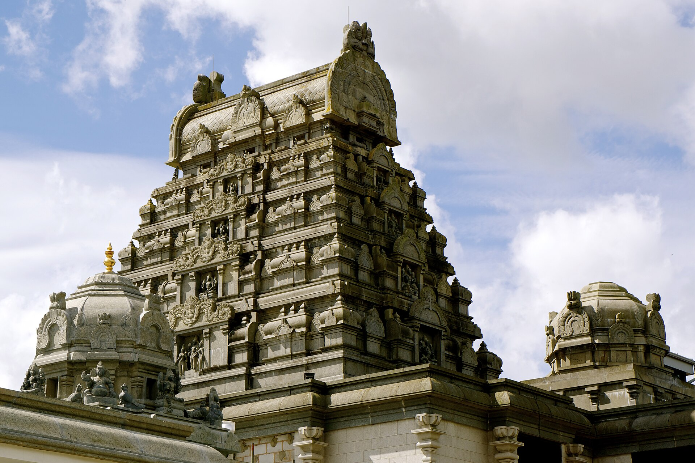

01 Andhra PradeshTirupati Balaji Temple
Tirumala, Andhra Pradesh
The Sri Venkateswara Swamy Temple is one of India's most important pilgrimage destinations. Dedicated to Lord Venkateswara, the temple stands on the Tirumala hills and attracts devotees throughout the year.
Deity
Lord Venkateswara
Known For
Pilgrimage & Seva